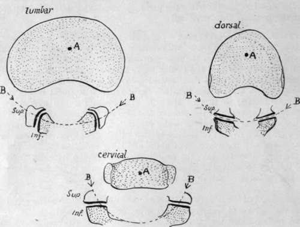
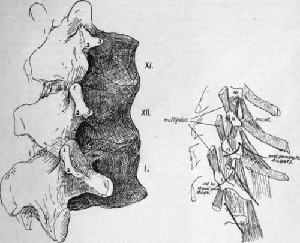

Lumbar Vertebra. Part 2
Description
This section is from the book "The Anatomy Of The Human Skeleton", by J. Ernest Frazer. Also available from Amazon: The anatomy of the human skeleton.
Lumbar Vertebra. Part 2
These origins from the fronts of the transverse processes account for the presence of the lumbar nerves in the substance of the Psoas, for it is apparent that each nerve as it turns down over the front of the transverse process next below (see Fig. 35), must lie on a part of the muscle and so enter its substance; the ilio-inguinal and ilio-hypogastric nerves do not cross a transverse process, so they lie behind the muscle and emerge from under its outer border, and the fifth lumbar nerve also does not lie in the muscle, whereas the lower part of the fourth, passing down to join it across the fifth transverse process, must run in the muscle for a short part of its course.
There are tendinous and muscular fibres between the transverse processes, and markings for these may be found on the upper and lower edges of the processes and adjacent parts of the posterior surface.
The middle or main lamella of the aponeurosis of origin of the Transversalis is attached to the outer end of the transverse process, extending on to its back surface, where a roughened area near the tip marks its connection with the bone. Fibres radiate out from each process into this aponeurotic sheet, as shown in Fig. 35, and these are modified above into the costo-lumbar ligamentous attachments and below into the ilio-lumbar ligament; between these they open out into the middle lamella. The lamella is thin between the processes, and has some inter-transverse fibres in it which are probably part of the inter-transverse musculo-tendinous system, with the fasciae of which it otherwise blends.
The Quadratus mmborum lies in front of this middle lamella and also covers the outer end of the transverse processes, to the upper and lower parts of which it is attached : the muscle is covered by the anterior lamella, and this reaches the transverse processes at the inner margin of the Quadratus, under cover of Psoas. Thus a secondary line can be found running across the transverse process for this lamella, dividing the front surface into an inner part for the Psoas and an outer covered by Quadratus lumborum.
Fig. 28.-Schemes to show the effect of the shape of the articular processes on the movement of rotation between the bodies. A is approximately the centre round which rotation takes place ; B is part of the circumference of a circle drawn round A and passing through the articular processes. It is clear that the shape and plane of these processes in the lumbar and cervical regions inhibits any rotation between the vertebral bodies.
The accessory tubercle or true transverse element gives origin to a slip of Longis-simus dorsi, and the Multifidus spina lies further in, on the back of the laminae and articular masses, to which it is attached : the mammillary process is on the back margin of the upper articular process, and affords origin to some fibres of Multifidus.
Examine the line made by the strong ligamenta subflava on the neural surfaces of the lamina?. Evidently the ligament does not run into the capsule, as this is turned out and away from it: as a result the edge of the ligament is free in the hinder part of the intervertebral foramen just behind the issuing nerve.
Fig. 29.-First lumbar and last two dorsal vertebra, to show the transverse processes. i, upper (mammillary) ; 2, lower ; and 3, external (accessory) tubercles. The smaller drawing is a scheme of a dissection, including the tenth dorsal vertebra.
The lower articular processes of the fourth segment are further apart than in those higher up, but not so widely separated as in the last lumbar vertebra, in which they are practically as far apart as the upper pair. There is a slight change in the curvature and direction of the articular surfaces from above downwards, but in all the vertical plane in which they he, directed mainly in an antero-posterior direction, effectually inhibits the power of rotation in the lumbar column. This is shown in the accompanying scheme (Fig. 28), and compared with the conditions in the cervical and dorsal regions.
There is occasionally a distinct costal element in the ossification of the first lumbar transverse process, but this does not form the whole of the process, and the correspondence of this with a dorsal rib is not quite certain : it is interesting to consider this region in the lumbar series and compare it with the transverse processes of the lower dorsal vertebras.
In Fig. 29 the last two dorsal and first lumbar vertebrae from a well-marked set of bones are represented and the tubercles on the transverse region are shown and numbered ; at the same time a scheme of a dissection to show the muscle-attachments is given, which includes the process of the tenth dorsal vertebra. The mammillary tubercles (1, 1) are plainly enlarged "muscular" tubercles for Multifidus spinas, while the accessory tubercles (2, 2) evidently serve the same function for the Longissimus dorsi ; the different relation to the articular processes only has to do with the different positions of these processes in the dorsal and lumbar regions. But there is another tubercle on the last two dorsal vertebras, numbered 3 in the figure, and this appears to be in series with the costal support of the tenth transverse process and, like it, to give origin to Levator costas fibres in each segment. In these two vertebras, therefore, we may perhaps look on the third tubercle as in some measure comparable with the others, being accentuated as a point of muscular attachment, or we may consider it a representative of the " costal tubercle " or rib-carrying process ; probably its value might be expressed by describing it as a costal tubercle specialised as a muscular process. But in the first lumbar transverse process there is great difficulty in recognising this third tubercle. Is it elongated to form the " transverse process," or is it lost in the base of this process, which is a true rib in value and supported on the third tubercle fused with it ? The first of these alternatives is suggested to the eye by the schematic figure and the second by the conditions seen in the larger drawing, but in each case, the opinion would only be founded on appearances. Examination of a first lumbar gives one the decided impression that the proximal parts of a rib are fused with the bone, and the rare occurrence of a costo-transverse foramen here supports the view. Lumbar ribs articulating with the body also support it, but other ribs occur that are only at the ends of the transverse processes and these seem to favour the first of the alternatives. Possibly the extra costal centre in the transverse process represents a fused head end of a rib and the occasional lumbar rib at the extremity may represent the shaft belonging to it.
Continue to: